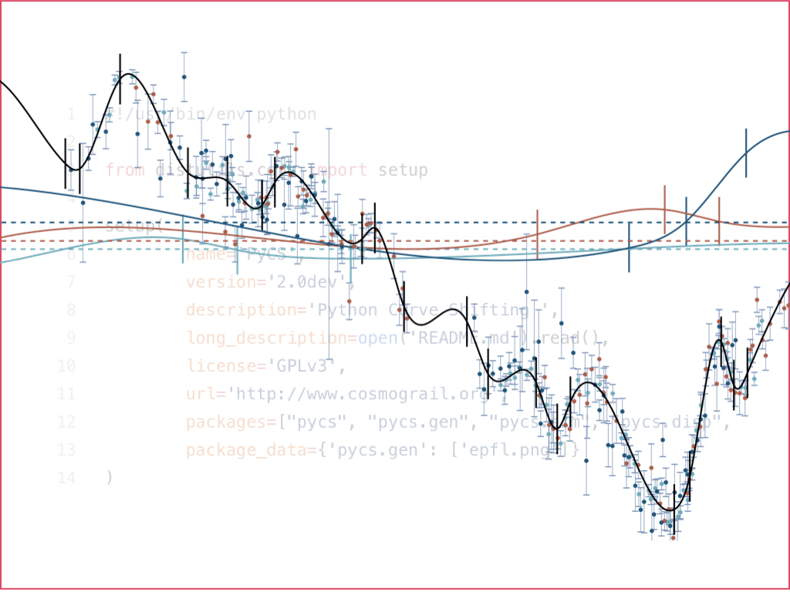
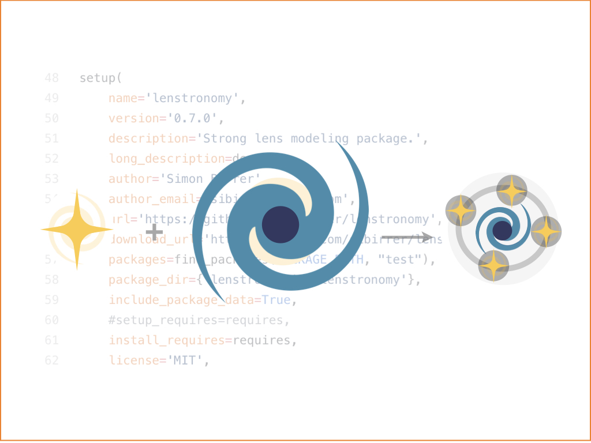
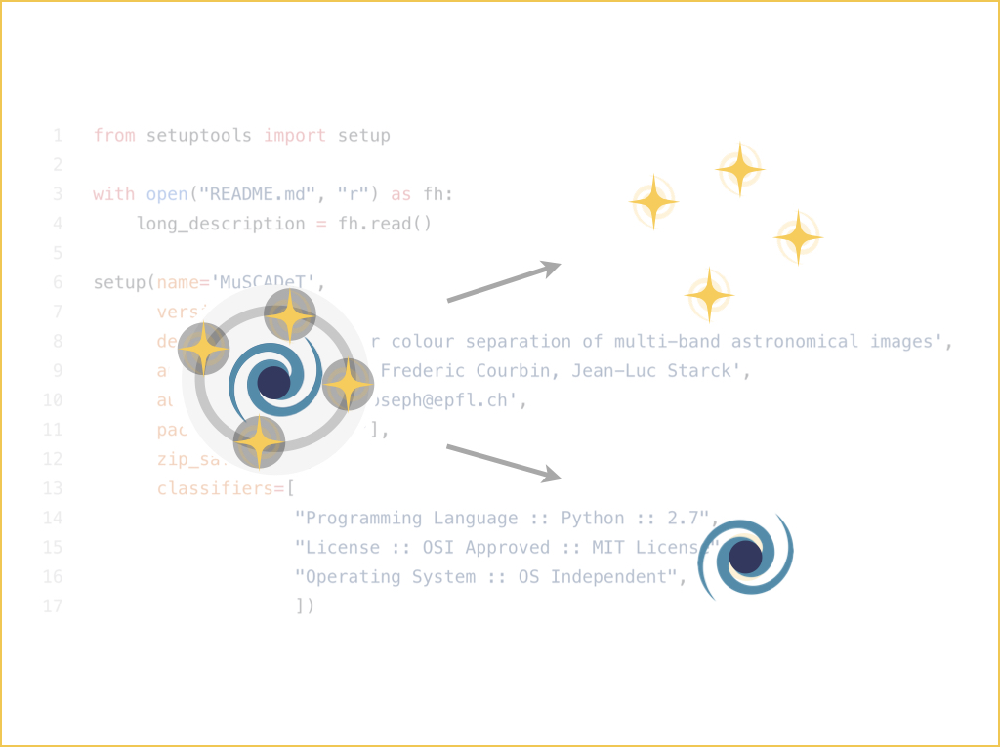
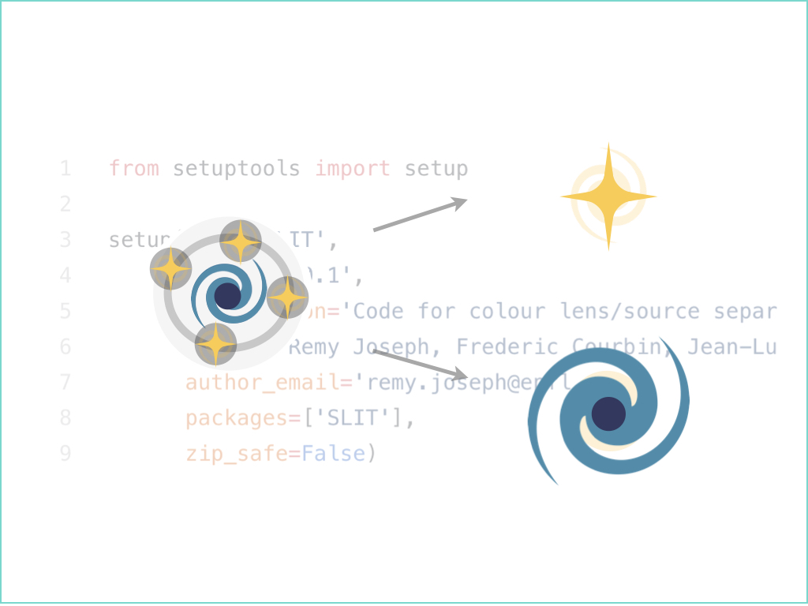

TDCOSMO
About
Research Steps
Projects
Software
Database
Literature
Public Software

PyCS
Time delays from light curves

lenstronomy
Modelling of strong lenses

MuSCADeT
Color-based object separation

SLIT
Reconstruction of strongly lensed sources